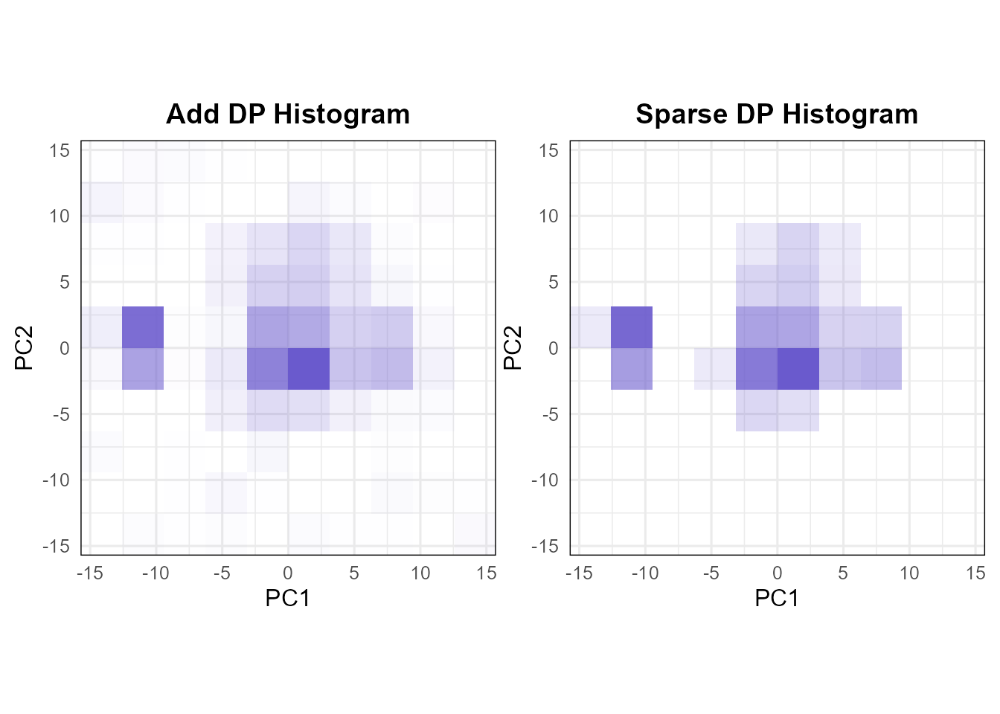
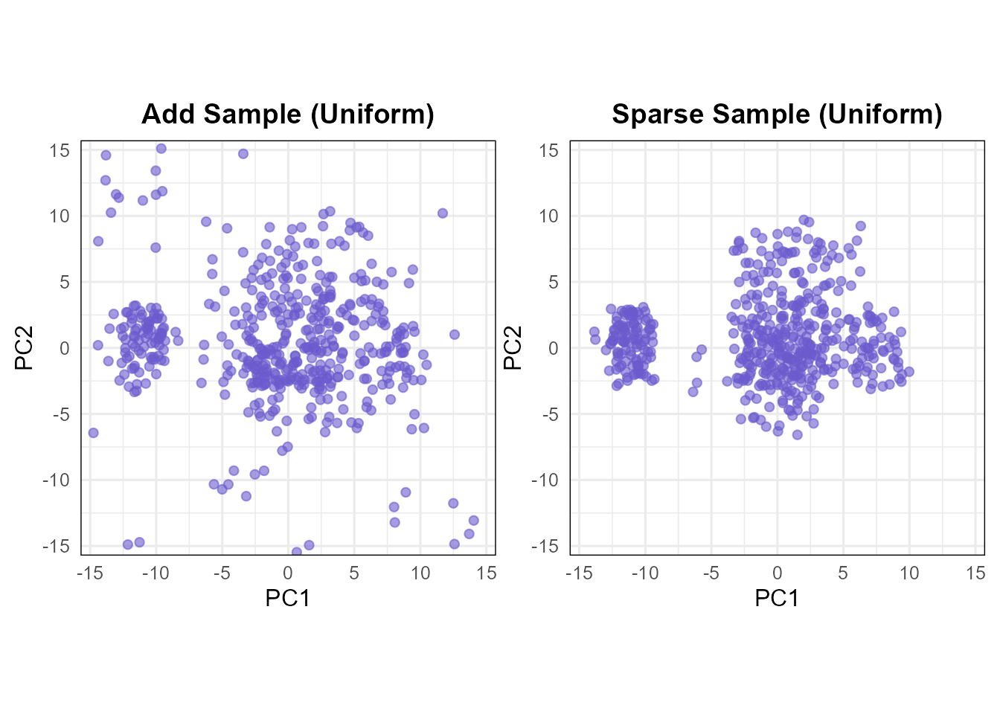
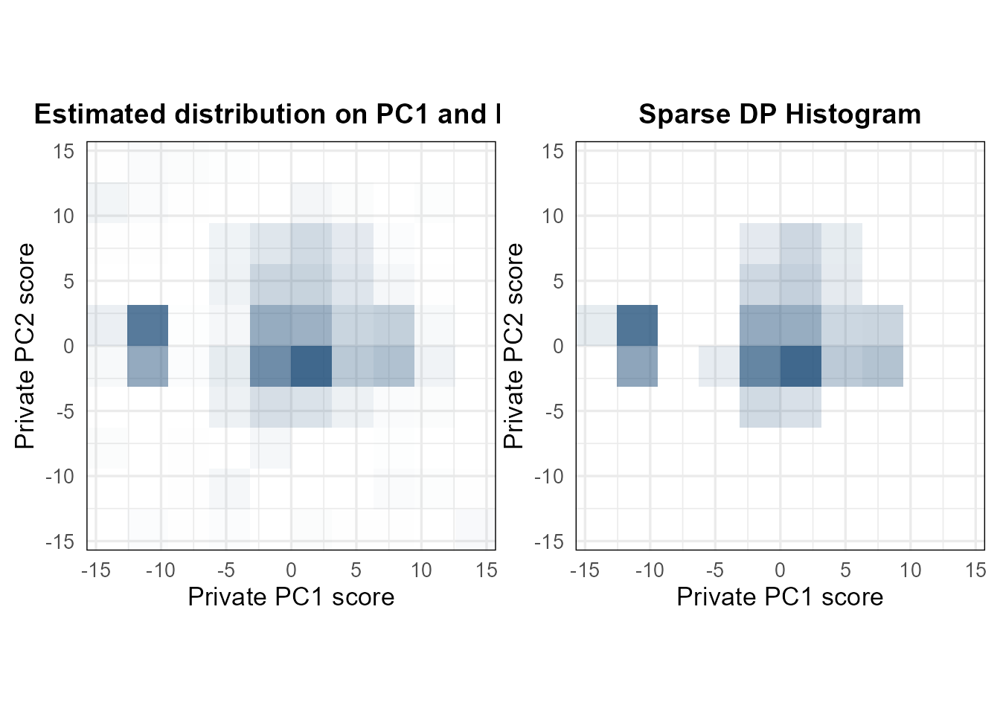
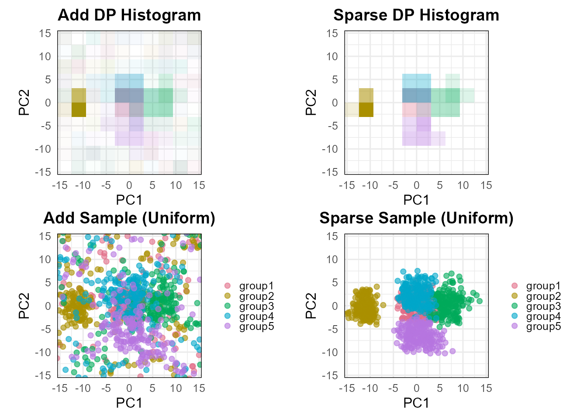
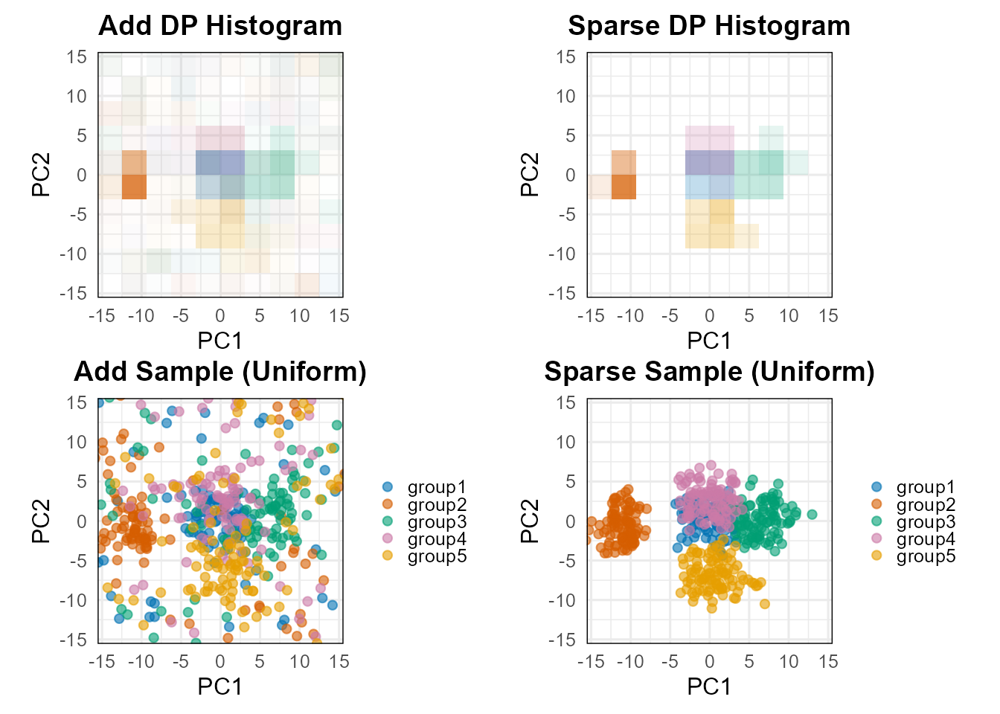

This tutorial shows how to use dp_score() to estimate
private 2D score histograms, inspect their stored
probabilities, and display them as histograms or synthetic score
points. It also covers the additive and sparse estimators,
grouped plots, plot controls, and reuse of previously estimated private
PC directions.
The focus is on R arguments, examples, and visualization. For the mathematics of the private frame, histogram mechanisms, and privacy accounting, see Theory of DP Score. For data requirements and general budget allocation, see Getting Started.
1. Load the example data
We use gau, a synthetic dataset containing 1,000
observations and 20 numeric variables. For dataset details, see the gau.
2. Set the privacy budget and estimate a score histogram
A dp_score() fit needs two privacy components:
loading, to estimate private PC
directions, and score, to estimate the
private plotting frame and the histogram. If split is
omitted, dp_score() allocates the total privacy budget
equally between them.
score_privacy <- privacy_control(
eps = 6,
delta = 1e-4
)In this example, loading and score each receive
when used by dp_score(). Within the score allocation, the
package automatically assigns 35% of score epsilon to frame
estimation, 65% to the histogram, and
all score delta to the histogram.
First, we use both the additive and sparse histogram methods, without retaining non-private reference data:
set.seed(123)
score_fit <- dp_score(
X,
privacy = score_privacy,
bins = c(10, 10),
method = c("add", "sparse"),
axes = c(1, 2),
non_private = FALSE
)
score_fit
#> Differentially Private Score Histograms
#> Data: 1000 observations x 20 variables
#> Score axes: PC1, PC2
#> Grid: 10 x 10
#> Methods: score = add, sparse
#> Total privacy budget (per histogram method): eps = 6; delta = 1e-04
#> Non-private reference: not storedThe main arguments of dp_score() are:
| Argument | Description |
|---|---|
X |
Input observations; numeric features in columns. The selected group column, if any, is excluded from PCA. |
privacy |
Loading/score allocations from
privacy_control(); an omitted split gives an
equal two-way allocation for dp_score(). |
bins |
Positive integer vector c(m_x, m_y)
specifying the numbers of horizontal and vertical histogram bins
(required). |
method |
One or both of "add" (Gaussian) and
"sparse" (stability-based); default:
c("add", "sparse"). |
axes |
Two distinct PC indices, in horizontal/vertical order
(default: c(1, 2)). |
cpp.option |
Use the compiled direction estimator
(TRUE, the default), or the R implementation
(FALSE). |
V_dp |
Reuse a previously estimated full private direction matrix; the loading allocation must record its actual prior privacy cost. |
non_private |
Retain ordinary PCA reference scores and histograms
when TRUE (default: FALSE). |
group |
A group-column name or a label vector;
NULL (default) fits a pooled histogram. Groups must be
publicly fixed for the stated parallel-composition argument. |
The V_dp argument allows previously estimated private PC
directions to be reused in dp_score(). For a detailed
example, see Reusing
Private PC Directions in the DP Scree Plot tutorial.
2.1. Additive and sparse methods
The two estimators differ in how they perturb bin frequencies. The full mathematical definitions are in Additive histogram and Sparse histogram.
| Method | What to expect |
|---|---|
"add" |
Adds Gaussian noise to every count; normalizes truncated positive counts. |
"sparse" |
Adds Laplace noise only to nonempty bin proportions; keeps cells passing a threshold and may produce an all-zero histogram. |
3. Inspect and plot the result
3.1. Read the fit and stored estimates
Printing the fitted object gives a summary of the stored results.
summary() reports the frame, grid, grouping information
when applicable, and positive bin counts and probability sums:
score_summary <- summary(score_fit)
score_summary
#> DP Score Histograms Summary
#> Data: 1000 observations x 20 variables
#> Score axes: PC1, PC2
#> Grid: 10 x 10
#> Methods: score = add, sparse
#>
#> Private frame:
#> Axis Center Lower Upper
#> PC1 0.05101 -15.68 15.78
#> PC2 0.14947 -15.58 15.88
#>
#> Histogram summary:
#> Method Bins Positive bins Probability sum
#> add 100 66 1
#> sparse 100 20 1
#>
#> Allocated privacy budget (per histogram method):
#> eps delta
#> Loading 3.00 5e-05
#> Score frame 1.05 0e+00
#> Score histogram 1.95 5e-05
#> Total 6.00 1e-04
#>
#> All histogram methods use the same private PC directions and frame.
#>
#> Non-private reference: not storedYou can inspect the same results directly:
score_fit$frame
#> $xlim
#> [1] -15.67937 15.78139
#>
#> $ylim
#> [1] -15.58090 15.87985
head(score_fit$add)
#> xmin xmax ymin ymax prob
#> 1 -15.67936864 -12.53329290 -15.5809 -12.43483 0.0000000000
#> 2 -12.53329290 -9.38721716 -15.5809 -12.43483 0.0021982799
#> 3 -9.38721716 -6.24114142 -15.5809 -12.43483 0.0003693919
#> 4 -6.24114142 -3.09506569 -15.5809 -12.43483 0.0022237447
#> 5 -3.09506569 0.05101005 -15.5809 -12.43483 0.0000000000
#> 6 0.05101005 3.19708579 -15.5809 -12.43483 0.0026362709
sum(score_fit$add$prob)
#> [1] 1
score_fit$metadata$method
#> [1] "add" "sparse"
score_fit$metadata$privacy
#> $total
#> eps delta
#> 6e+00 1e-04
#>
#> $budgets
#> $budgets$loading
#> eps delta
#> 3e+00 5e-05
#>
#> $budgets$score
#> eps delta
#> 3e+00 5e-05
#>
#>
#> attr(,"class")
#> [1] "dppca_privacy_control"| Stored component | Meaning |
|---|---|
score_fit$frame$xlim,
$ylim
|
Private horizontal and vertical plotting limits. |
score_fit$add |
Data frame with xmin, xmax,
ymin, ymax, and prob for every
cell. |
score_fit$add$prob |
Estimated probability mass in each cell, not density height or an observed cell count. |
score_fit$nonprivate |
NULL here
(non_private = FALSE); when requested, stores ordinary PCA
reference results. |
score_fit$nonprivate$scores |
Centered ordinary PCA score coordinates, available only
when non_private = TRUE. |
score_fit$nonprivate$frame,
$histogram
|
Ordinary reference frame and histogram when requested. |
score_fit$metadata |
Data dimensions, axes, bin counts, method(s), privacy allocation, and grouping settings. |
3.2. Show a private histogram
histogram_plot <- plot(
score_fit,
type = "histogram"
)
The shade of a cell represents its estimated probability mass.
The center argument controls display
centering, not the estimation of private directions, the score
frame, or histogram probabilities. By default,
center = TRUE shifts the midpoint of the privately
estimated score frame to
in both histogram and synthetic-sample plots, See Display
centering.
To retain the original private frame coordinates in the plots, set
center = FALSE explicitly:
3.3. Draw synthetic score points
The same fitted histogram can be displayed as synthetic points.
set.seed(321)
sample_plot <- plot(
score_fit,
type = "sample",
sampling_control = sampling_control(
method = "uniform",
sample_size = 500,
bandwidth_scale = 0.1
)
)
These are 500 newly generated coordinates. A bin is first selected using the stored private probabilities; the point is then generated within that bin or at its center, optionally with Gaussian jitter. See Synthetic score sampling.
The main arguments of sampling_control() are:
| Setting | Description |
|---|---|
method = "uniform" |
Draw uniformly inside a sampled bin, followed by optional jitter (default). |
method = "center" |
Start at a sampled bin’s center, followed by optional jitter. |
sample_size = NULL |
By default, generate the same number of synthetic points as the original observations (1,000 in this example). |
bandwidth_scale = NULL |
Use method-specific default jitter multipliers:
center = 0.5 and uniform = 0.25. |
bandwidth_scale = 0 |
Disable jitter; "center" then produces
points exactly at bin centers. |
When dp_score() is fitted with
non_private = TRUE, plot() automatically
includes non-private comparison panels. For sample plots, the
non-private panel displays the original centered PCA scores by default,
while the private panel displays synthetic points generated from the DP
histogram. If sample_size is explicitly specified, both
panels display the specified number of synthetic points sampled from
their respective histograms. A fit with non_private = FALSE
displays only private panels; plot() has no separate
non_private option.
4. Customize the plot
Use score_plot_control() to adjust colors, labels, point
sizes, and the group legend.
plot(
score_fit,
type = "histogram",
plot_control = score_plot_control(
color = "#1F4E79",
add_title = "Estimated distribution on PC1 and PC2",
xlab = "Private PC1 score",
ylab = "Private PC2 score",
hist_alpha_range = c(0, 0.85),
base_size = 13,
title_size = 14
)
)
| Plot setting | What it changes |
|---|---|
color, hist_alpha_range
|
Default histogram/scatter color and shading intensity. |
scatter_size,
scatter_alpha
|
Synthetic/observed point size and transparency. |
add_title, sparse_title
|
Titles for the private histogram methods. |
scatter_title,
nonprivate_title
|
Titles used when ordinary reference panels are shown. |
xlab, ylab,
base_size, title_size
|
Axis labels and typography. |
group_colors,
show_group_legend
|
Group palette and legend visibility. |
5. Group-wise private score histograms
The group argument estimates histograms for labelled
groups using one shared private direction estimate, one frame,
and one grid. Group labels and their fixed membership must be
public for the stated group-level privacy accounting. The
group column is excluded from PCA features. The theory and
assumptions are detailed in Group-wise private score
histograms.
5.1. Fit a private histogram for each group
The gau_g dataset adds a group column to
the 20 numeric variables.
data("gau_g", package = "dppca")
X_group <- gau_g
dim(X_group)
#> [1] 1000 21
table(X_group$group)
#>
#> group1 group2 group3 group4 group5
#> 200 200 200 200 200We first fit private-only group histograms:
set.seed(456)
group_fit <- dp_score(
X_group,
privacy = score_privacy,
bins = c(10, 10),
group = "group",
non_private = FALSE
)
#> Warning: PCA: 20 numeric variables used.
#> Excluded from PCA (1): group.
#> Grouping variable: group
#> Groups (5): group1, group2, group3, group4, group5
summary(group_fit)
#> DP Score Histograms Summary
#> Data: 1000 observations x 20 variables
#> Score axes: PC1, PC2
#> Grid: 10 x 10
#> Methods: score = add, sparse
#> Group variable: group
#> Groups: group1, group2, group3, group4, group5
#> Excluded columns: group
#>
#> Private frame:
#> Axis Center Lower Upper
#> PC1 0.0201 -15.54 15.58
#> PC2 -0.1381 -15.70 15.42
#>
#> Histogram summary:
#> Group Method Bins Positive bins Probability sum
#> group1 add 100 57 1
#> group1 sparse 100 4 1
#> group2 add 100 52 1
#> group2 sparse 100 3 1
#> group3 add 100 56 1
#> group3 sparse 100 6 1
#> group4 add 100 57 1
#> group4 sparse 100 5 1
#> group5 add 100 62 1
#> group5 sparse 100 5 1
#>
#> Allocated privacy budget (per histogram method):
#> eps delta
#> Loading 3.00 5e-05
#> Score frame 1.05 0e+00
#> Score histogram 1.95 5e-05
#> Total 6.00 1e-04
#>
#> All histogram methods use the same private PC directions and frame.
#>
#> Non-private reference: not stored
names(group_fit$groups)
#> [1] "group1" "group2" "group3" "group4" "group5"The result stores one histogram per group, for example
group_fit$groups[["group1"]]$add. Optional ordinary
reference group histograms would be available through
group_fit$nonprivate$groups[["group1"]]$histogram only when
fitted with non_private = TRUE.
5.2. Plot a group histogram overlay
The group-wise histograms can be visualized using
plot(group_fit) without specifying any additional
options.
plot(group_fit)
Group colors are assigned automatically according to the following rules:
- If all group labels are valid color names recognized by R (e.g.,
"red","blue", and"green"), those colors are used directly. - Otherwise, colors are automatically generated using the
"Dark 3"palette fromgrDevices::hcl.colors(). - Users can override the automatic colors by specifying
group_colorsthroughscore_plot_control().
For example, we can assign custom colors to the five groups and adjust the histogram transparency:
group_colors <- c(
group1 = "#0072B2", group2 = "#D55E00", group3 = "#009E73",
group4 = "#CC79A7", group5 = "#E69F00"
)
group_hist_plot <- plot(
group_fit,
sampling_control = sampling_control(
method = "uniform", sample_size = 500
),
plot_control = score_plot_control(
group_colors = group_colors,
hist_alpha_range = c(0, 0.75)
)
)
The hist_alpha_range argument controls the transparency
range, with c(0, 0.75) setting the maximum opacity to 0.75.
Each group’s bin probabilities are normalized within that group. Also,
sample_size = 500 requests 500 points across all
groups, not 500 per group.
For complete argument descriptions, see ?dp_score,
?plot.dp_score, ?score_plot_control, and
?sampling_control. For a combined scree, score, and loading
analysis, continue to DP PCA
Visualization.
Previous: DP
Scree Plot
Next: DP PCA
Visualization
Tutorial overview: Choose a
starting point